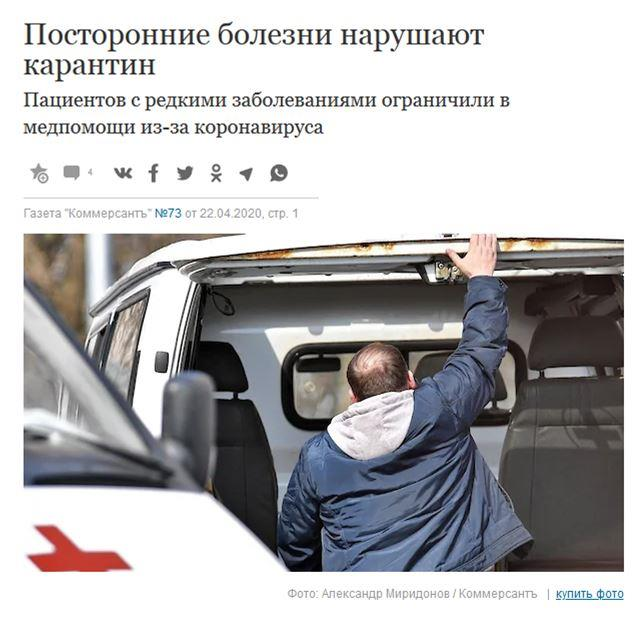

La surcharge momentanée liée à l'arrivée du coronavirus, au-delà de l'étrange méthode de décompte des cas1 met en lumière l'échec des réformes néolibérales, qui se sont démultipliées ces dernières années. Réduction des lits, réduction du personnel soignant, endettement des hôpitaux publics, privatisation, mise en concurrence interne ... C'est la notion même de service public qui a été bafouée, pour faire de l'hôpital une entreprise, dont le but n'est pas de soigner au mieux la population, mais de faire des économies faute de ne pouvoir faire des bénéfices. Et répétons-le c'est un échec.
Nous le voyons clairement aujourd'hui, avec des structures, déjà saturées, qui ont du mal à faire face à une poussée supplémentaire. Pourtant, personne ne cherche à évaluer « l'efficacité » de ces réformes néolibérales, le cours idéologique n'est pas remis en cause. Retour sur ces réformes en France et en Russie.
En France, l'histoire du démantèlement2 de l'hôpital public remonte aux années 80, quand avec la réforme de 1983, le forfait journalier met fin à la gratuité des soins. Forfait qui, depuis, n'a cessé d'augmenter. La loi Evin de 1991, sous couverture d'autonomie, renforce finalement les pouvoirs du préfet pour fermer les lits et restructurer des établissements. Ensuite, le plan Juppé prépare un mouvement de privatisation par l'obligation d'austérité et confie les pleins pouvoirs budgétaires à une Agence régionale, dont le directeur peut également décider du regroupement des établissements et de leur privatisation. Ce mouvement de privatisation se poursuit et est même aujourd'hui largement recommandé par la Caisse3 des dépôts et consignations, dans le langage creux du néomanagement:
« Dans son sabir technocratique, la CDC préconise en effet de “mettre en place des PPP - Partenariat public-privé, ndlr. - vertueux intégrant des démarches de développement durable (construction, modernisation, exploitation, …) particulièrement innovantes et performantes”. Piqûre de rappel : très populaires dans les années 2000, les PPP permettent à une collectivité locale ou à l’État de confier à un seul opérateur privé - en général, un consortium réunissant des entreprises du BTP et des services - la conception, la construction et le financement d’un équipement public, mais aussi son exploitation sur une longue période allant de vingt-cinq à trente ans. Pendant cette période, l’utilisateur public paie un loyer, avant de finalement devenir propriétaire de l’équipement en question. »
Cette pratique a surtout permis de créer des surcoûts ... donc il faut prévoir une aide de l'État pour restructurer la dette des établissements ... privés non lucratif, bref privé. Le plan Juppé était assumé comme devant faire de la place au privé, rien n'a changé. Mais continuons. La loi Aubry des 35 heures, cumulée au plan Juppé, c'est-à-dire sans l'embauche de personnels supplémentaires, a mis l'hôpital public en grande difficulté.
Ensuite, en 2007, toujours plus vite, toujours plus loin, un grand plan de réforme de l'hôpital public est lancé, faisant entrer le service public dans la logique primaire du management, avec mise en concurrence interne.
Roselyne BACHELOT,
Ministre de la Santé en 2007« La réforme hospitalière instaurée en 20074 a entraîné le passage d'un financement global à un financement par activité. En clair, les ressources ne sont plus distribuées à partir de la prise en charge globale des patients sur l'ensemble de leur séjour, mais en fonction des actes réalisés. Les différents pôles sont donc payés en fonction de leur activité pendant l'hospitalisation du patient. Ainsi, plus le nombre d'actes effectués est élevé, plus le financement le sera. Une logique qui entraîne une inévitable course à l'activité. Mais certains services sont moins rentables que d'autres et les hôpitaux se sont petit à petit endettés. L'État les a donc priés de réduire leur budget. Or, la masse salariale en représente la majorité, ce secteur a donc subit les principales coupes. Les hôpitaux doivent économiser l'équivalent de 22.000 postes en trois ans, jusqu'en 2017. »
Ainsi, la coupe continue. Par ailleurs, le refinancement prévu est conditionné à des regroupements avec le privé ou à des partenariats public-privé. C'est donc une incitation à la privatisation de l'hôpital public. La loi Bachelot ensuite renforce le mouvement d'austérité budgétaire en plus de la logique du marché, les revenus du directeur de l'Agence et des médecins vont dépendre en partie de leur « performance ». La distinction public / privé s'efface, au profit du privé. La réforme de 2012 n'arrange rien, la machine5 est lancée :
« Les trois lois de financement de la Sécurité sociale votées depuis 2012 n’ont fait qu’aggraver la situation des établissements hospitaliers. En 2013 et 2014, plus d’un milliard d’euros supplémentaires ont été ponctionnés sur les budgets de l’hôpital public. Mais aujourd’hui c’est une « purge » beaucoup plus violente qui est en cours avec le « pacte de responsabilité ». (...) 860 millions d’euros de « maîtrise de la masse salariale » sont annoncés dans ce document. Ils équivalent à 22 000 suppressions de postes (soit 2 % des effectifs de la fonction publique hospitalière) en 3 ans. »
L'hôpital n'est plus un service public, mais une entreprise. Il n'a plus vocation, comme service public, à donner un soin d'une meilleure qualité possible à la population, mais à coûter le moins cher possible, voire à faire du profit.
Dans cette logique, l'hôpital6 doit continuer à soigner, avec le moins possible de personnel et le moins de lits :
« En 2018, 4172 lits en hospitalisation complète ont été supprimés dans les quelque 3000 établissements de santé que compte l’Hexagone (1356 hôpitaux publics, 681 établissements privés et 999 cliniques privées). Cela représente une baisse de 1% sur un an et ramène le nombre de lits disponibles à 395.693. «Depuis 2013, ce sont 17.500 lits d’hospitalisation complète qui ont ainsi été fermés, soit une baisse de 4,2% en cinq ans», souligne la Drees. »
Évidemment, ça ne marche pas. On le voit depuis de nombreuses années. C'est flagrant aujourd'hui, au-delà de l'hystérie socio-politique, qui est montée autour du coronavirus, l'hôpital public a objectivement été mis en situation de survie.
La Russie a suivi la même voie, avec les mêmes conséquences. Le partenariat public - privé est à la mode dans tous les services publics, mais la manière dont "l'optimisation" de la médecine a été conduite ces dernières années, cumulée au culte du tout-technologique remplaçant l'humain, est un échec. Entre 2000 et 2015, le nombre d'établissements médicaux publics est passé de 10 700 à 5 400 dans le pays. Pour ce qui concerne l'infectiologie, domaine qui est appelé à réagir en période dite de pandémie virale, la coupe sèche fut pire que dans la médecine générale.
Si la baisse des médecins fut de 2% en général, des spécialités ont quasiment disparu, notamment les infectiologues, allergologues, dermatologue - 10%. Selon les données officielles, le nombre de lits en infectiologie est passé de 70 500 en 2010 à 59 000 en 2018. Dans de nombreux cas, tout le département a été fermé d'un coup. Il reste environ 6 000 spécialistes infectiologues dans le pays, surtout à Moscou et Saint-Pétersbourg, mais certaines régions ont des problèmes : 6 en Tchoukotka ou 2 dans la région des Nenets, par exemple. C'est un secteur sous-financé, à 2% du budget médical (voir le journal Nasha Versia, 20-26 avril 2020, N°15, P. 16).
Aujourd'hui, la pandémie idéologique du coronavirus oblige à réagir. Et « l'optimisation » mise en œuvre soulève tout autant de questions - qui pourtant ne sont pas soulevées. En toute logique, lorsque des corpus spéciaux étaient construits en infectiologie, ils étaient isolés des autres, afin d'éviter tout risque de contagion. Maintenant, en plus de la construction en vrac d'établissements temporaires, des départements dans certains hôpitaux sont reprofilés vers le coronavirus. Selon le ministère de la Santé, 100 000 lits existants doivent être reprofilés. Rappelons que grâce à la méthode inclusive de dénombrement, il y a en Russie aujourd'hui près de 60 000 cas, que 80% d'entre eux n'est pas grave, que 50% des nouveaux cas sont carrément asymptomatiques et que 0,016% des décès en Russie sont liés au coronavirus. En outre, ce virus n'est pas éternel - si on laisse les gens s'immuniser. Mais en jouant sur les statistiques, on peut encore faire durer le phénomène.
Pendant ce temps, les autres maladies existent toujours, aussi incroyable que cela puisse paraître ... Et certains patients commencent à avoir des difficultés d'accès aux soins7. De nombreux patients, de 18 régions différentes, se sont plaint de difficultés pour les maladies chroniques de l'intestin, de la mucoviscidose ou de l'hépatite B et C. Ils ne peuvent avoir un accès régulier ni au médecin, ni au traitement - ce qui peut être ici réellement fatal. Le problème est que ces traitements sont délivrés en milieu hospitalier. Et certains établissements se sont vus reprofilés vers le coronavirus.
Par exemple, à Moscou, le Centre de traitement de l'hépatite s'occupe désormais du Covid et les patients malades de l'hépatite B et C ne savent pas où s'adresser pour leur traitement ... Dans d'autres secteurs, en oncologie notamment, le délai d'attente avant d'avoir accès aux soins a été allongé. Ce peut aussi être une méthode pour faire baisser la proportion de décès liés au coronavirus - que d'augmenter les autres ...
Étrangement, personne ne s'interroge sur « l'efficacité » des réformes néolibérales dans nos pays, qui ont conduit à cette situation aberrante ... Bien au contraire, puisque ça ne marche pas, allons encore plus loin.
K.B-G.
NOTES ET RÉFÉRENCES
1. Lire « Cet étrange décompte très « inclusif » des cas de coronavirus : de la médecine à l'oracle https://russiepolitics.blogspot.com/2020/04/cet-etrange-decompte-tres-inclusif-des.html
Partager cette page